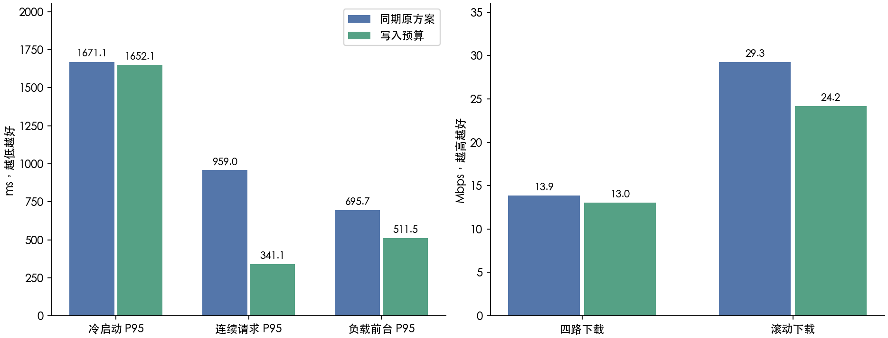
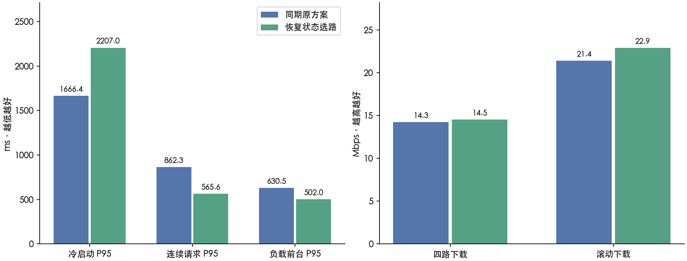
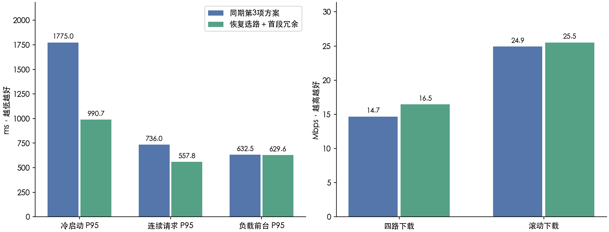
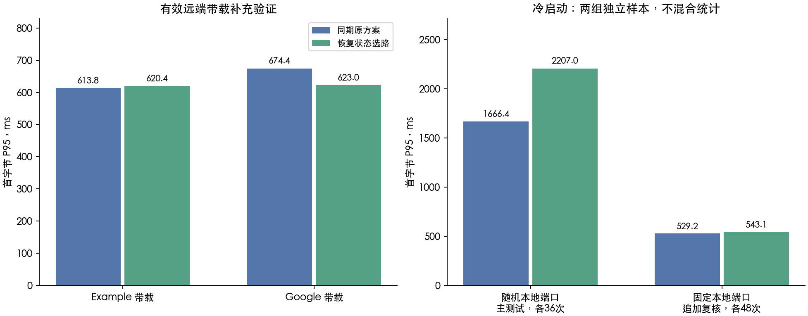

2026-11-23 · 安卓 TFY-AN00 原生核心独立对照程序 · 公网隔离入口。未以正式 App 全链路或其他网络的成绩替代本轮验收。
| 条件 | 前台请求 | ≥500ms 慢请求 | 慢请求有下行恢复证据 | 慢请求状态在恢复时解除 | 首段组包等待 P95 ms | 预算让出次数 |
|---|---|---|---|---|---|---|
| baseline | 36 | 12 | 12 | 3 | 3.831 | 0 |
| budget | 36 | 3 | 3 | 0 | 2.237 | 280 |
组包等待由同一服务端的数据就绪事件到首段业务帧 PacketSent 事件计算，不是网卡实际发出的时间。恢复证据按两端包号、包号空间和流偏移关联；“有恢复证据”不能直接解释为全部慢时长都由丢包造成。原方案12个慢请求都观察到下行恢复，3个可直接关联到状态读取在流头恢复时解除；首段组包等待P95仅约3.8ms，因此仍需关注恢复路径。物理延迟/丢失发生在哪一跳尚未确定。
服务器目标首读等待包含客户端业务首段尚未到达的时间，不能全部归为目标处理。状态读等待是目标TLS阶段的子集；各列分位数不可相加，也不能将两台设备的绝对时钟直接相减。机制轮实际为每条件3组：2×8MiB下载与12次前台请求，保留原计划描述的更正文件。
每条 QUIC 连接共享 16KiB / 2ms 的新数据组包预算，仅在已发送至少256KiB的大流与新流共存时限制大流。新流最多保留500ms优先机会，独占下载不受预算节流。写入按最多16KiB切分；WriteWithLimit 在组包时扣减额度，重传不重复扣减。它不是ACK窗口，也不能回收已经在途的数据或保证独占带宽。状态字节和业务线格式不变，已有业务不迁移、不重放。默认关闭。
自检覆盖竞争、共享额度、取消、优先机会过期、完整大流内容、认证/目标错误与计数既有测试；race和vet记录随包附上。诊断每流新增有界首读、首次写入接受和慢读写记录，性能轮关闭逐包与转发追踪，仅保留两边一致的轻量选路记录。
主验收：未通过。{'enough_loaded': True, 'loaded_p95': True, 'foreground_complete': True, 'background_complete': True, 'parallel_complete': True, 'parallel_throughput': True, 'rolling_complete': True, 'rolling_throughput': False, 'warm_not_regressed': True}

| 指标 | 同期原方案 | 写入预算 | 成功数 / 样本 |
|---|---|---|---|
| 带载前台 P50 / P95 | 368.638 / 695.738 ms | 314.422 / 511.497 ms | 72/72；72/72 |
| 冷启动 P50 / P95 | 562.197 / 1671.075 ms | 498.56 / 1652.065 ms | 每版本36次 |
| 连续请求 P50 / P95 | 327.1 / 959.006 ms | 283.011 / 341.096 ms | 每版本36次 |
| 背景下载完成 | 12/12 | 12/12 | 每版本6轮，2×16MiB |
| 四路下载 | 13.86 Mbps (24/24) | 13.03 Mbps (24/24) | 每版本6轮；4MiB/文件；滚动12文件、4并发 |
| 滚动下载 | 29.28 Mbps (72/72) | 24.17 Mbps (72/72) | 每版本6轮；4MiB/文件；滚动12文件、4并发 |
主验收：通过。{'enough_loaded': True, 'loaded_p95': True, 'foreground_complete': True, 'background_complete': True, 'parallel_complete': True, 'parallel_throughput': True, 'rolling_complete': True, 'rolling_throughput': True, 'warm_not_regressed': True}

| 指标 | 同期原方案 | 恢复状态选路 | 成功数 / 样本 |
|---|---|---|---|
| 带载前台 P50 / P95 | 357.624 / 630.467 ms | 340.73 / 502.029 ms | 72/72；72/72 |
| 冷启动 P50 / P95 | 520.961 / 1666.411 ms | 497.357 / 2207.04 ms | 每版本36次 |
| 连续请求 P50 / P95 | 298.802 / 862.295 ms | 309.89 / 565.618 ms | 每版本36次 |
| 背景下载完成 | 12/12 | 12/12 | 每版本6轮，2×16MiB |
| 四路下载 | 14.25 Mbps (24/24) | 14.54 Mbps (24/24) | 每版本6轮；4MiB/文件；滚动12文件、4并发 |
| 滚动下载 | 21.40 Mbps (72/72) | 22.94 Mbps (72/72) | 每版本6轮；4MiB/文件；滚动12文件、4并发 |
主验收：未通过。{'enough_loaded': True, 'loaded_p95': False, 'foreground_complete': True, 'background_complete': True, 'parallel_complete': True, 'parallel_throughput': True, 'rolling_complete': True, 'rolling_throughput': True, 'warm_not_regressed': True}

| 指标 | 同期第3项方案 | 恢复选路＋首段冗余 | 成功数 / 样本 |
|---|---|---|---|
| 带载前台 P50 / P95 | 360.004 / 632.479 ms | 331.566 / 629.572 ms | 72/72；72/72 |
| 冷启动 P50 / P95 | 503.832 / 1774.957 ms | 497.853 / 990.675 ms | 每版本36次 |
| 连续请求 P50 / P95 | 344.645 / 735.966 ms | 315.746 / 557.812 ms | 每版本36次 |
| 背景下载完成 | 12/12 | 12/12 | 每版本6轮，2×16MiB |
| 四路下载 | 14.68 Mbps (24/24) | 16.48 Mbps (24/24) | 每版本6轮；4MiB/文件；滚动12文件、4并发 |
| 滚动下载 | 24.94 Mbps (72/72) | 25.53 Mbps (72/72) | 每版本6轮；4MiB/文件；滚动12文件、4并发 |
第3项仅为新流修正原自适应选择：依据本端已发包判丢计数的新增量和入口RTT膨胀，短时避开不佳连接；近期信号300–1000ms过期，额外恢复触发的跨通道切换间隔至少500ms。对端都不佳时保留原选择，不关闭或迁移既有流，也不重放。这里只直接观测本端发包与RTT，没有新增服务端下行恢复反馈，不能声称覆盖全部下行恢复。诊断42次选择中3次观察到恢复状态并选中另一条健康通道，不能据此把全部改善都归因于某一种丢包原因。第3项6对带载轮中5对P95改善，保留逐轮数据。
第4项是在第3项候选上进行增量对照，两边均启用恢复状态选路；没有叠加未通过的第2项预算。Kind2通过已有exporter HMAC认证，服务端与客户端必须显式启用且支持QUIC DATAGRAM。冗余采用现有QUIC AEAD加密，不改变密码算法或自行处理nonce。每流最多8193字节（状态1字节+业务前8KiB）和12次副本尝试；可靠流仍是完整规范字节序列，客户端按偏移交付一次，并检查重叠内容一致性。旧端不支持时报错，不自动降级重发。仅作为实验选项，默认关闭。详见 扩展说明。
保留恢复状态选路作为本轮通过门槛的实验候选；写入预算和首段冗余保持关闭。这不是正式App发布或所有网络的长期结论。

| 远端目标 | 原方案带载 P50 / P95 | 恢复选路带载 P50 / P95 | 前台成功：原；新 | 背景完成：原；新 |
|---|---|---|---|---|
| example.com:443 | 406.5 / 613.8 ms | 398.1 / 620.4 ms | 24/24；24/24 | 4/4；4/4 |
| www.google.com:443 | 375.0 / 674.4 ms | 370.8 / 623.0 ms | 24/24；24/24 | 4/4；4/4 |
每目标每条件24次前台HEAD，2组各2×16MiB后台下载，全部前台处于后台仍活跃的阶段；关闭逐包诊断，使用同一共享客户端。补充门槛是各目标P95恶化不超过10%、至少12个带载样本且完成率不降低，结果通过。Example约+1.1%，Google约−7.6%，没有宣称远端同样达到20%改善。
最初远端补充组后台IP地址与证书SAN不匹配，背景下载失败，因此不作为有效带载数据。原记录保存在 无效组说明；改用证书对应域名后完整重跑，证书校验始终开启。
主测试的冷启动P95由1666.4升至2207.0ms，保留不删。追加各48次固定本地UDP端口复核：原方案529.2ms、候选543.1ms（约+2.6%），两边48/48成功，通过追加10%门槛；未复现原大幅差异。固定本地端口不能证明公网映射和中间路由完全相同，冷启动无可用备选时恢复选路通常不触发，因此仍不能断言原差异由策略引起或已排除所有冷启动问题。
最终候选仅在已有自适应双通道上启用RecoveryAware，传输、加密和拥塞控制保持原样；默认配置仍不自动改变。实验配置及验收状态 · 有效远端汇总 · 冷启动复核。
机制轮36个前台请求中32个从副本提前交付部分字节，服务端42个流的副本载荷最大8193字节、尝试最大11次，未超出上限。这里的提前是相对可靠Read消费进度，不等于都避免了一次物理丢包。有限冗余能工作，但本轮没有转化为足够的带载P95改善。
| 负载 | 第3项：接收QUIC字节/验证业务字节 | 第3项+副本：同口径 |
|---|---|---|
| mixed_summary | 1.0227 | 1.0245 |
| parallel_download | 1.0227 | 1.0246 |
| rolling_download | 1.0215 | 1.0233 |
比率含QUIC头、控制帧、重传和副本，不含UDP/IP；是Close前仍登记会话的快照，各组均2条会话，不跨移除/Reset累积。大文件组约增加0.2个百分点，不能据此推断小请求的相对成本或锁屏耗电。资源、能耗与其他网络尚未完成长期验收。
带载前台P95至少降低20%；连续请求P95恶化不超过10%；四路与滚动有效吞吐保留至少90%；前台、背景及下载完成率不降低；每条件至少48个带载样本。本轮计划使用各72个带载请求、36个冷启动、36个连续请求，四路/滚动各6轮。P95为最近秩法；吞吐为校验通过字节总量除以各轮总耗时，失败时间不剔除。
冷启动新建入口；连续请求复用入口，但每次仍新建目标TLS并发HEAD。本地主目标为VPS上的TLS1.3测试服务，减少第三方波动；真实远端网站另组核对，不混合统计。不同阶段的原方案数值受网络时段变化影响，只与该阶段候选比较，不能横跨阶段按绝对值排名。小样本分位数不宣称统计显著或能推广到全部网络。